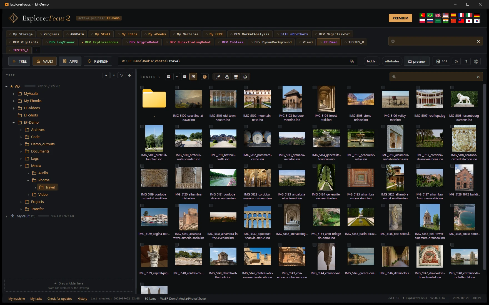
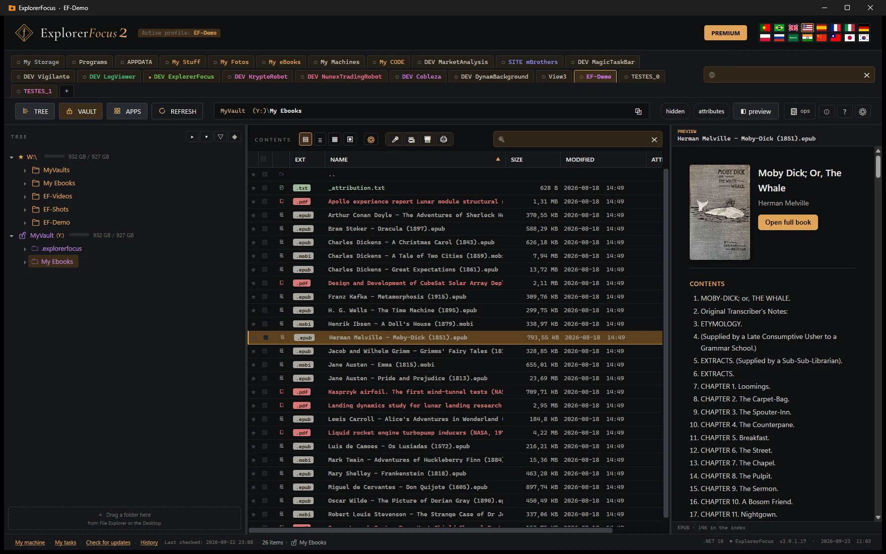
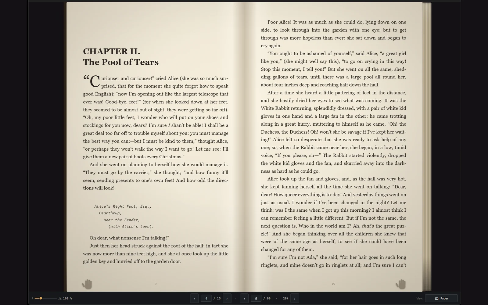
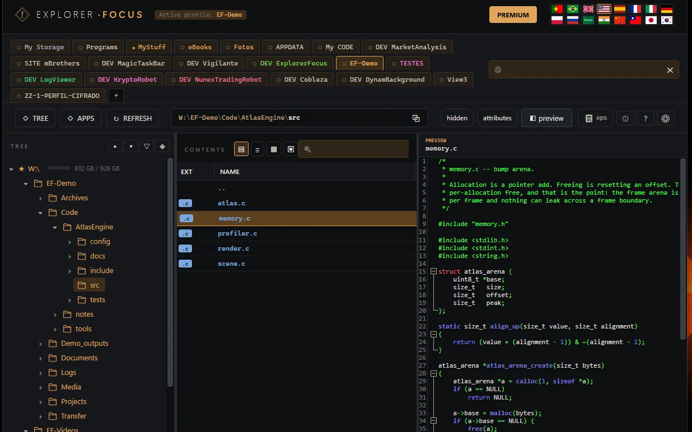
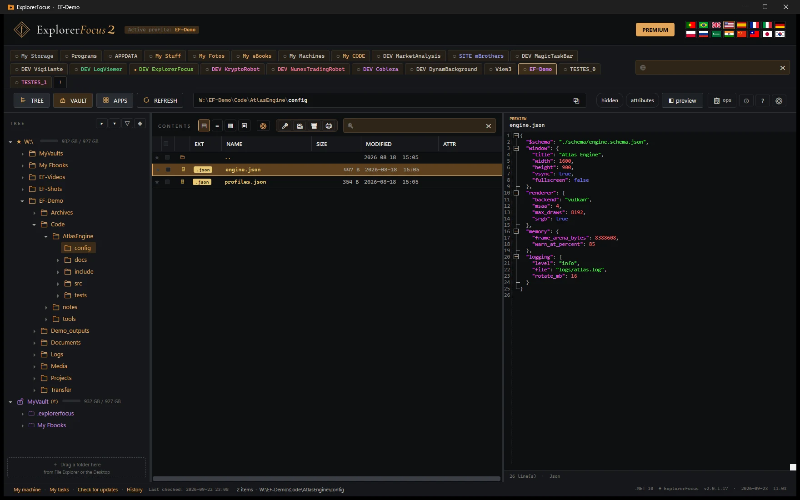
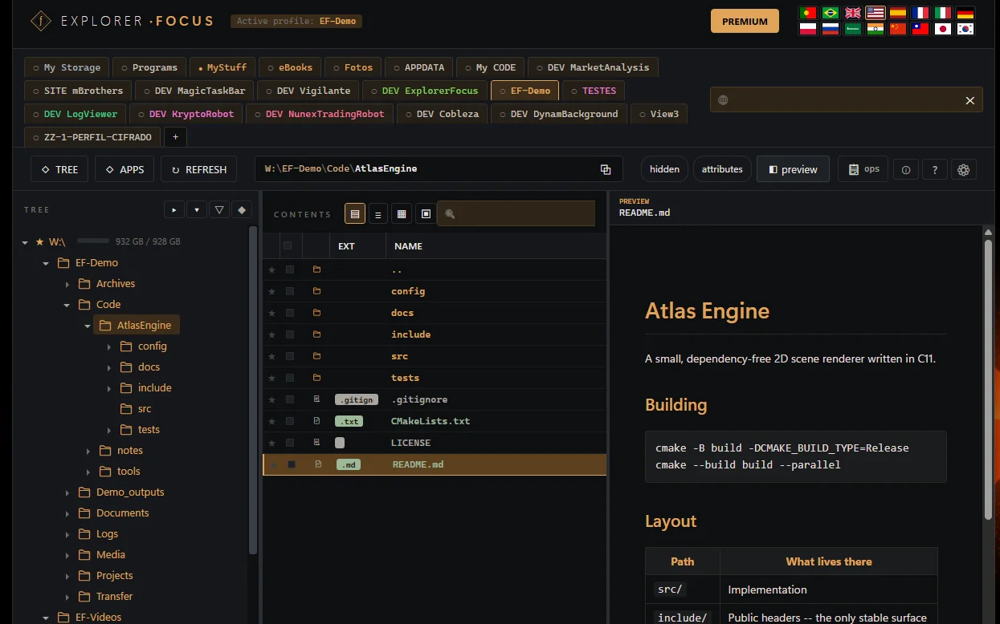

ExplorerFocus는 늘 같은 폴더에서 일하는 사람을 위한 윈도우 탐색기 대체품입니다. 구성할 수 있는 프로필, 깔끔한 트리, 거의 모든 것을 여는 미리보기 — 코드, 문서, 책 — 그리고 무슨 일이 벌어지는지 정말로 알려 주는 파일 작업. 셸의 잡음 없이.
ExplorerFocus2
이제 데이터 금고와 함께






모든 기능은 익숙한 파일 트리 위에서 매일 부딪히던 구체적인 문제에 답하려고 들어왔습니다. 보여 주기용은 하나도 없습니다. 거의 다 켜고 끌 수 있습니다.
끌어서 순서 바꾸기, F2로 이름 바꾸기, Ctrl+1..9로 탭 이동, Ctrl+T로 새로 만들기. 탭은 마지막으로 있던 폴더와 트리 상태를 기억합니다.
보고 싶은 루트를 직접 정합니다. 파일 시스템과 레지스트리가 나란히. 한 번도 열지 않는 항목으로 가득한 사이드바는 없습니다.
*.cs *.json이라고 쓰면 OR로 동작합니다. ?onfig.json, Test*Run.cs — 모두 됩니다.
탭을 오른쪽 클릭 → “전체 검색에 포함”. 표시(●/○)가 무엇이 들어갔는지 알려 줍니다. 결과는 모달이 아닌 창에 나옵니다.
텍스트는 AvalonEdit로 구문 강조, 이미지는 배경에서 디코딩, PDF는 Edge 엔진(WebView2)으로 렌더링, 마크다운은 Markdig가 어두운 테마의 HTML로 변환합니다. 하나하나 끌 수 있습니다. 선택을 바꾸면 이전 로딩은 취소됩니다.
집중된 윈도우 탐색기 대체품. 구성할 수 있는 폴더를 중심으로 만들어, 중요하지 않은 것은 전부 잊습니다.
net10.0-windows · WPF · single-file
참고 — 미리보기는 Edge WebView2가 설치되어 있어야 동작합니다(Windows 10/11에 포함).
떠 있는 창이 파일별 게이지, 실제 속도, 남은 시간, 전체 개수를 보여 줍니다. 일시 정지, 계속, 취소. 최대 6개를 동시에. 돌아가는 동안 당신은 당신 일을 하시면 됩니다.
.dwg, .psd, .bak이 있는 폴더에 들어갔나요? 모아서 한 번만 묻습니다. 줄마다 고를 수 있고(.exe를 지정하면 이름은 FileVersionInfo에서 나옵니다), 관심 없는 것은 무시로 표시하면 됩니다. 목록은 남습니다.
.cs, .xaml, .json, .md, .cmd, .ps1 — 전형적인 구조로 시작합니다. 입력하는 동안 이름만 선택되고 확장자는 지워지지 않습니다.
제목 표시줄, 스크롤바, 표, 대화 상자, 도구 설명, 마크다운 미리보기 — 모두 같은 시각 언어로. 엉뚱한 곳에서 튀어나오는 흰색은 없습니다.
메인 창과 작업 창의 크기와 위치. 마지막 활성 탭. 트리 창의 너비. 열 정렬. 트리 상태. 모두 %LOCALAPPDATA%\ExplorerFocus에.
어떤 파일 위에서든 1.8초 뒤 뜨는 설명이 계산된 크기, 날짜, 속성을 보여 줍니다. 폴더는 재귀 크기까지 — 필요할 때만 계산하고, 디스크를 두들기지 않도록 세마포어를 둡니다.
그냥 클릭하면 선택됩니다. Shift+클릭은 “다수가 결정한다”는 규칙으로 범위를 늘립니다 — 범위가 이미 대부분 선택돼 있으면 해제하고, 아니면 선택합니다. Ctrl+클릭은 하나씩 토글합니다. “실수로 선택을 전부 날렸다”는 일은 끝입니다.
독립 실행, 단일 파일, 압축되고 디지털 서명까지. USB에 복사하면 어떤 Windows 10/11에서도 돕니다. net10.0-windows + WPF — 실행 파일 폴더 밖의 의존성은 없습니다.
메뉴만이 아닙니다 — 모든 대화 상자, 모든 메시지, 모든 도구 설명. 하나를 고르면 인터페이스가 그 자리에서 바뀝니다. 다시 시작할 것도, 다시 설치할 것도 없습니다.
제조사, 모델, 펌웨어, 시리얼 번호. 플래터인지 SSD인지 — 그리고 어느 쪽인지 말해 줍니다. 플래터는 탐색 시간이라는 값을 치르니까요. 버스, 섹터 크기, 파티션 방식, 그 아래의 장치. 파일 시스템이 실제로 지원하는 것: EFS, 파일별 압축, 하드 링크, 정션과 심볼릭 링크, 스파스 파일, 할당량, ACL, USN 변경 저널, 대소문자 구분. 그리고 디스크가 내놓을 때는 SMART 데이터까지.
펌웨어 신원과 시리얼 번호, 기계가 언제 만들어졌는지, 보드에 무엇이 납땜되어 있는지, 메모리를 슬롯 하나하나, 그리고 윈도우가 어떻게 설치되었는지. 읽기만 합니다: 인터넷에 나가지 않고 권한 상승도 요구하지 않습니다.
윈도우는 파일이 어딘가에서 열려 있다고만 하고 어디인지는 결코 말하지 않습니다. 이것은 탐색기 안에 살기 때문에 압니다. 시스템 관리자가 답하지 않는 세 가지도 답합니다: 사용자 폴더에서 실행되는 것은 무엇인지, 서명되지 않은 것은 무엇인지, 같은 프로그램의 두 사본 중 어느 것이 어느 버전인지. 프로세스를 끝낼 때는 먼저 묻습니다 — 이름과 PID와 창 제목을 함께 — 그리고 기계를 넘어뜨릴 것들에는 버튼 자체가 없습니다.
SFTP, FTP/FTPS, WebDAV(Nextcloud, ownCloud, NAS, IIS)에 연결합니다. 둘러보고, 미리보고, 올리고 내리고, 폴더를 만들고, 이름을 바꾸고 복사/이동합니다 — 바이트 단위 진행률과 취소까지. 원격 파일을 로컬에서 편집하고 저장할 때 동기화합니다. 비밀번호나 SSH 키로 인증하며, 비밀 정보는 DPAPI로 암호화됩니다.
무료: SFTP/FTP/FTPS 연결 1개 — 둘러보기와 미리보기만. PREMIUM에서 WebDAV, 여러 연결, 모든 작업이 열립니다.
안전한 OAuth로 Dropbox와 OneDrive에 연결합니다 — 비밀번호는 저장하지 않습니다. 로컬 폴더처럼 둘러보고, 미리보고, 올리고 내리고, 폴더를 만들고, 이름을 바꾸고 복사/이동합니다. 당신의 파일은 결코 우리 서버를 지나지 않습니다.
PREMIUM: 첫 연결부터 필요합니다 — 둘러보기, 미리보기, 모든 작업.
어떤 .epub, .mobi, .azw, .azw3, .prc, .fb2든 즉시 미리보기: 표지, 목차, 첫 부분의 글. 전용 리더로 책 전체를 열면 장 이동, 쪽 건너뛰기, 자동 스크롤, 그리고 읽던 위치까지 기억합니다. 만화도 마찬가지입니다: .cbz와 .cbr는 수백 메가바이트를 먼저 풀지 않고 한 쪽씩 열립니다.
종이 모드. 같은 책을 다른 모습으로. 펼친 두 페이지, 가운데 책등, 결이 있는 종이와 등불 빛, 그리고 넘길 때 손 아래에서 휘는 낱장. 버튼 하나로 기본 · 종이 · 밤의 종이를 오가며, 기본이 그대로 기본값입니다. 진짜 책이 되지는 않습니다 — 질감도, 페이지 넘기는 소리도, 냄새도, 들었다 내려놓는 무게도 없습니다 — 그래도 화면이 가까이 다가갈 수는 있습니다. 그렇게 얻는 것은 편안함이고, 편안함은 사람마다 다릅니다. 이것은 그저 한 가지가 더 늘어난 것입니다.
무료: 미리보기 — 표지, 목차, 그리고 안을 처음 들여다보기.
PREMIUM: 완전한 리더 — 장 이동, 쪽 건너뛰기, 자동 스크롤, 종이 모드, 쪽 넘김, 그리고 최근 20권의 기억.
내 책은 열립니다. DRM이 걸린 책은 그것을 판 상점에 묶여 있습니다 — 앱이 그런 책을 만나면 이유를 설명해 줍니다.
Word(.doc/.docx), Excel, PowerPoint, RTF, OpenDocument(문서, 시트, 프레젠테이션)를 창 안에서 바로 미리봅니다. 소리와 영상은 미리보기에서 재생되며, 떠 있는 창과 음량·속도 조절이 있습니다. 미리보기가 있는 파일에는 표시가 붙고, 비밀번호가 걸린 파일은 비밀번호를 묻지 않고 표시만 합니다.
한 번 누르면 현재 폴더에 마이크를 녹음합니다. 마이크를 고르고, 레벨 미터를 실시간으로 보고, 녹음 음량을 조절해 WAV나 M4A/AAC로 저장합니다.
카메라를 실시간으로 미리보며 카메라와 마이크, 해상도와 형식을 고릅니다 — MP4, WMV, AVI. 한 번 눌러 현재 폴더에 저장합니다.
무료는 아래쪽에 은은한 워터마크가 붙습니다. PREMIUM: 워터마크 없음.
평판이나 급지기(ADF)에서 여러 장을 한 번에 스캔합니다. 해상도와 색을 고르세요 — 컬러, 회색조, 흑백. JPEG/PNG로 저장하거나 전부 여러 쪽 PDF로 묶고, 같은 PDF에 계속 장을 더할 수 있습니다.
무료: 평판 1쪽, 워터마크 포함. PREMIUM: 여러 쪽, 급지기(ADF), 워터마크 없음.
두 번 누르거나(또는 안을 둘러보기) 압축 파일로 들어가 내용을 보고, 미리보고, 전부 풀지 않고 파일만 꺼내 복사합니다. 읽기만 합니다. 연결 프로그램…은 여전히 WinRAR/WinZip/7-Zip으로 엽니다.
어느 모니터의 영역(또는 화면 전체)을 골라 마이크와 함께 MP4로 녹화합니다. 카메라를 더해도 됩니다: 전환 효과(페이드, 와이프, 슬라이드, 모자이크)로 화면⇄카메라를 바꾸고, 한쪽 구석에 PiP로 두거나 화면 분할로 나란히 놓습니다.
무료: 워터마크 + 15초, 소리 없음. PREMIUM: 워터마크 없음, 시간 제한 없음, 소리 포함(마이크 + 시스템).
녹화물(화면과 카메라)에 오프닝 카드, 계속 떠 있는 텍스트 띠, 그리고 크레딧 형식의 엔딩 카드(최대 10줄)를 붙입니다. 독립된 5개 모델, 각각 3가지 제시 방식, 로고, 배경색, 에피소드 표시까지 — 일관된 영상 시리즈를 위해 만들었습니다.
PREMIUM. 엔딩 카드에 “Made with ExplorerFocus” 서명이 은은하게 들어갑니다.
화면을 소리 없이 녹화하고, 전용 창에서 영상을 재생하며 그 위에 내레이션을 넣습니다. 내레이션은 별도 파일로 들어갑니다. 배경 음악을 더하고, 음량을 맞추고(음악이 목소리를 덮지 않게), 세 소스로 최종 영상을 만듭니다.
PREMIUM. 영상과 내레이션은 별도 파일로 남고, “최종 생성”만이 섞인 영상을 만듭니다.
미리보기로 열 수 있는 동영상이라면 위쪽에 버튼이 나타납니다. 오디오를 파일로 저장 — MP3, AAC, WMA, WAV, FLAC, ALAC, 무손실도 포함입니다 — 또는 소리 없는 동영상 사본을 만들 수 있습니다. 원본 바로 옆에, 같은 이름으로 놀입니다. 원본 동영상은 그대로 유지됩니다. 변환 창도, 두 번째 프로그램도 없고, 아무것도 컴퓨터 밖으로 나가지 않습니다.
Windows가 그 동영상을 재생할 수 있다면, 소리도 꺼낼 수 있습니다. 버튼은 실제로 할 수 있을 때만 켜집니다.
PDF를 선택하면 위쪽에 PDF 도구 버튼이 켜집니다. 여러 파일을 하나로 합치고, 페이지 범위로 나누거나(1-3, 5, 8-), 축소판에서 페이지를 정리할 수 있습니다: 회전, 삭제, 순서 변경, 또는 일부 페이지를 새 PDF로 꺼내기. 페이지를 JPG 또는 PNG 이미지로 바꾸고, 암호를 걸거나 해제하고, JPG/PNG 이미지와 간단한 Word 문서를 PDF로 변환합니다. 원본은 절대 건드리지 않습니다: 모든 결과는 바로 옆에 만들어지는 새 PDF이며, 책갈피와 문서 정보도 함께 옮겨집니다. 어디에도 업로드되지 않습니다.
무료: 합치기와 나누기.
PREMIUM: 페이지 정리, PDF를 이미지로, 암호 걸기 또는 해제, PDF로 변환.
보호되었거나 손상된 PDF는 그 사실을 알려 주며, 반쯤 만들어진 결과는 남기지 않습니다. 암호화된 금고 안에서도 드라이브 문자를 통해 작동합니다.
금고는 디스크 위의 암호화된 파일 묶음입니다 — 파일 이름, 폴더 이름, 내용까지 전부. 비밀번호로 열면 트리, 미리보기, 검색, 파일 작업이 늘 하던 그대로, 실시간으로 복호화된 내용 위에서 동작합니다. 닫으면 디스크에 남는 것은 읽을 수 없는 이름과 의미 없는 바이트뿐입니다.
금고는 다른 것과 다를 바 없는 가지입니다 — 한 디스크에 하나를 두든 백 개를 두든, 일반 폴더와 나란히 놓입니다. 각각 자기 비밀번호를 가집니다. 한 번의 동작으로 같은 비밀번호를 쓰는 금고를 하나든 천 개든 모두 열고, 한 번의 동작으로 모두 닫습니다.
모든 금고는 만들어질 때 자기만의 48개 낱말을 만듭니다 — 평범한 말로 적힌 그 금고의 키입니다. 비밀번호나 그 낱말들: 그 밖의 무엇으로도 금고는 열리지 않습니다. 저희도 열 수 없습니다 — 둘 다 잃으면 금고는 끝입니다. 낱말은 금고가 없는 곳에 보관하세요.
금고에 드라이브 문자를 주면 이 컴퓨터의 모든 프로그램에게 평범한 드라이브가 됩니다 — ffmpeg, Word, WinRAR, 그리고 탐색기 자체의 녹화기가 그 안에 바로 씁니다. 마운트는 비밀성을 호환성과 맞바꾸는 일이라, 기본값으로 켜져 있는 일은 없습니다.
파일은 통째가 아니라 블록 단위로 암호화됩니다. 4 GB 동영상도 먼저 메모리에 복호화할 필요가 없습니다 — 미리보기가 열리고, 곧바로 40분으로 건너뛸 수 있습니다. 문서, 책, 이미지도 금고 안에서 같은 방식으로 미리 봅니다.
저희가 두는 한계는 없습니다. 금고에는 파일 하나를 담을 수도, 수천 개에 걸친 몇 TB를 담을 수도 있습니다. 디스크가 끝나는 곳에서 끝납니다.
NTFS에서 16 TB, exFAT에서 16 EB — 그리고 FAT32에서는 4 GB입니다. 그것은 저희가 아니라 FAT32의 한계이기 때문입니다. 암호화는 약 0.09%를 더하므로, 간신히 들어가던 파일은 들어가지 않게 됩니다: 검사는 암호화된 크기로 하며, 시작하기 전에 실제 숫자와 함께 거절합니다.
형식은 Cryptomator의 것으로, 공개 명세를 바탕으로 다시 구현했고 양방향으로 동작합니다 — 검증했습니다. 여기서 만든 금고는 Android, iOS, Mac, Linux의 Cryptomator에서 아무 변환 없이 열립니다. 이미 가지고 있는 금고도 여기서 열립니다. ExplorerFocus가 내일 사라져도, 파일은 사라지지 않습니다.
왜 두 번째 열이 있는가: 가진 것보다 더 많은 보안을 약속하는 것은 이런 기능이 할 수 있는 최악의 일입니다. 이 분야의 어떤 제품이든 그 목록을 공개할 수 있습니다. 거의 아무도 공개하지 않습니다.
알아 둘 만한 부수 효과: 암호화된 모든 폴더는 디스크에서 똑같이 얕은 깊이에 놓이므로, 스무 단계 깊이의 폴더도 여전히 네 부분짜리 경로입니다. Windows 탐색기가 열기를 거부하는 경로도 금고 안에서는 동작합니다.
PREMIUM — 금고 만들기. 여는 것은 무료이며, 다른 곳에서 만든 금고도 마찬가지입니다.
중요한 작업에는 모두 단축키가 있습니다. 가능하면 마우스 없이 — 긴 작업을 위한 편안함입니다.
의존성은 하나하나 성숙함, 크기, 또는 합리적인 대안이 없다는 이유로 골랐습니다. 유행하는 프레임워크는 없습니다.
전체 목록은 프로그램 안에 함께 다닙니다. 모든 저작자와 라이선스 전문이 정보 → 서드파티 라이선스에 있습니다.
고전적인 WPF, WinUI도 MAUI도 아닙니다. Windows 10과 11 모두 지원합니다.
ObservableObject, ObservableProperty, RelayCommand — 소스 생성기가 만들어 줍니다.
Bouncy Castle(MIT)의 scrypt, AES-SIV, AES Key Wrap — 공개되어 있고 20년 넘게 널리 쓰여 왔습니다.
Dokany(LGPL v3)는 함께 배포하지 않습니다: 직접 설치하며, 탐색기는 그것을 찾았을 때만 사용합니다. .NET 연결 부분인 DokanNet(MIT)은 실행 파일 안에 함께 들어 있습니다.
금고 형식은 Cryptomator의 것으로, 공개 명세를 바탕으로 다시 구현했습니다. 복구 키는 BIP-39 낱말 목록(MIT)을 사용합니다.
구문 강조, 마크다운 렌더러, 그리고 PDF용으로 내장한 Edge 엔진.
휴지통으로 보내기 위해 — 유일하게 정직한 방법이고, 잘 됩니다.
SFTP는 SSH.NET으로, FTP와 FTPS는 FluentFTP로. 성숙하고, 좋은 의미로 지루합니다.
WebDAV, Dropbox, OneDrive는 각자의 HTTP API에 맞춰 직접 작성했습니다. 나쁘게 늙어 가는 남의 SDK는 없습니다.
마이크와 시스템 소리는 NAudio와 WASAPI로, 스캐너는 TWAIN 표준인 NTwain으로.
ZIP, RAR, 7z, TAR를 그 자리에서 읽어, 압축 파일이 폴더처럼 열리게 합니다.
윈도우가 경고했나요? 어떤 버전인지 보세요.
ExplorerFocus는 1.2.23 버전(2026년 8월 18일)부터 디지털 서명이 되어 있습니다. 서명이 최근 것이라 윈도우가 열 때 여전히 확인을 요구할 수 있습니다. 새 게시자를 알아보는 데 시간이 걸리는 것이고, 파일의 문제가 아닙니다. 반면 1.2.23 이전 사본은 서명이 없어 아예 열리지 않을 수 있습니다. 그럴 때는 자동 업데이트를 기다리지 마세요 — 그것도 앱 안에 있으니 함께 실행되지 못합니다. 이 페이지에서 다시 받으시면 됩니다.
프로그램 열기
작업 표시줄에 고정했는데 열리지 않나요?
ExplorerFocus.exe를 오른쪽 클릭 → 속성.파일 확인하기 — 선택 사항
공식 파일을 그대로 받았는지 확실히 하고 싶을 때만 하세요. 두 방법 중 하나를 고르시면 됩니다.
ExplorerFocus.exe가 내려앉는 곳입니다. 이 작업은 파일 탐색기에서 하세요, 브라우저에서가 아니라.방법 A — PowerShell
Get-FileHash .\ExplorerFocus.exe방법 B — 명령 프롬프트(cmd)
cmd를 입력한 뒤 Enter를 누릅니다.certutil -hashfile ExplorerFocus.exe SHA256이 값과 같아야 합니다 (대소문자는 상관없습니다)::
—
같습니까? 변경되지 않은 공식 파일입니다.
SHA-256이 뭔가요?
파일의 지문이라고 생각하시면 됩니다. 알고리즘이 ExplorerFocus.exe의 모든 바이트를 읽어 64자(A–F 글자와 숫자)의 코드로 줄입니다. 그 코드가 SHA-256입니다.
쓸모 있게 만드는 두 가지 성질이 있습니다:
그래서 확인은 간단합니다. 내 파일에서 계산한 코드가 여기 공개된 코드와 같다면, 바이트 하나까지 정확히 공식 파일이라는 뜻입니다 — 손상도, 변경도 없이. 이 코드는 되돌릴 수 없습니다. 비교용일 뿐이고 내용은 결코 드러내지 않습니다.
확인하는 방법
ExplorerFocus.exe가 내려앉는 곳입니다. 이 작업은 파일 탐색기에서 하세요, 브라우저에서가 아니라.방법 A — PowerShell
Get-FileHash .\ExplorerFocus.exe방법 B — 명령 프롬프트(cmd)
cmd를 입력한 뒤 Enter를 누릅니다.certutil -hashfile ExplorerFocus.exe SHA256이 값과 같아야 합니다 (대소문자는 상관없습니다)::
—
같습니까? 변경되지 않은 공식 파일입니다.